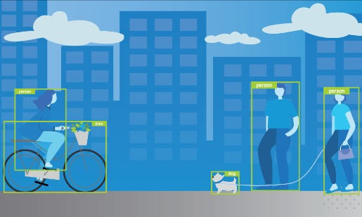

Computer Vision
Real - Time Object Detection and Recognition

Model trained using Deep Neural Network and YOLOV3 to recognize objects
in an image, video or real time object live from camera and classify them to a particular group.
Computer Vision
Face Recognition Using
Principal Component Analysis
Recongition of faces based on eigen vectors and eigen faces with Pricipal Component Analysis and Machine Learning and
evaluation of model performance.
Deep Neural Network based model which recognizes traffic signs in images, videos, or camera for self - driving cars
with User Interface using Python Flask API.
Prediction of fake emails using different Machine Learning algorithms and estimation of best one and its parameters
with User Interface using Python Flask API
Data Science
Real Estate
Price Prediction
Model trained on ML algorithms to predict real estate price of Brazil,\ Melbourne and Bengaluru city depending on available
features with UI for easy interaction.
Data Science
Analyzing US Economic Data and
Building a Dashboard
Extracting essential data from a dataset and displaying it by making correct decisions based on the data
by analyzing US Economic data with data science and AI.
Price Prediction of Real Estate properties based on its features using different
machine learning algorithms and estimation of best one with best parameters.
Survival prediction on Titanic based on features using different Machine Learning algorithms and estimation of best one and its parameters
with Python Flask API
Recongition of handwritten digits using different SVM kernel and determination of best Kernel performance.
Classification of Iris flower dataset using different SVM kernel and determination of best Kernel performance.